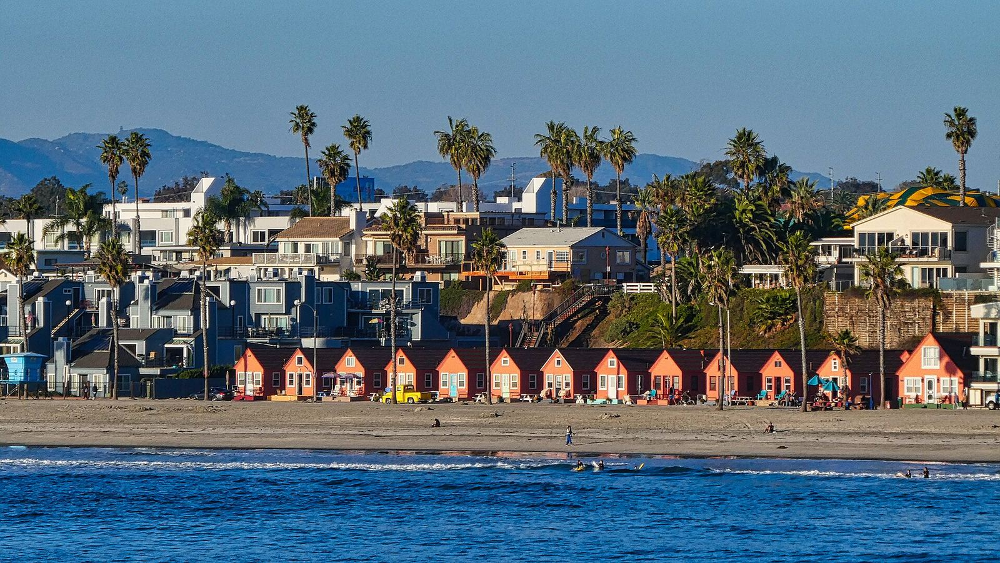
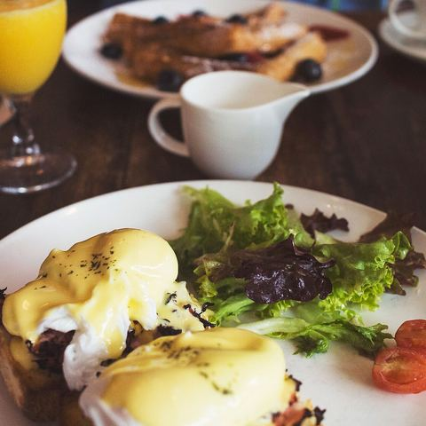
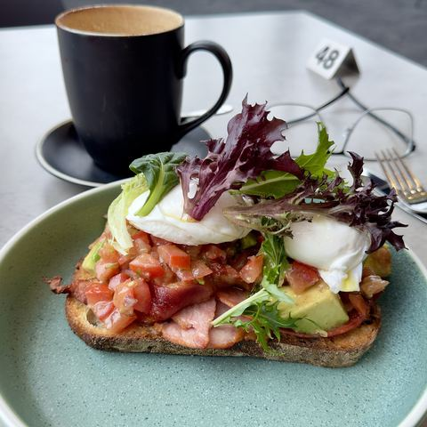
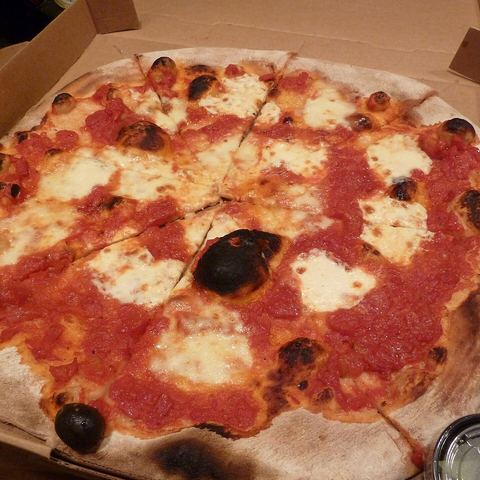

Three full days, three towns plus a Carlsbad bonus, eight of Maya's favourites. Walking the streets we keep talking about - for us.
Wed 30 Sep → Sun 4 Oct 2026John, solo this timeEWR ↔ SANBase: Vista
Booked · flights, stay & car confirmed

Oceanside, from the pier. Somewhere behind those palms is a kitchen we'll argue about paint colours in.
Maya,
This is the week I go and stand in the actual driveways. Eight of your favourites to walk through with Nick, three towns plus Nick's Carlsbad bonus, one very patient Tesla. Your filter is on the page now - Vista as the base, young-family streets, schools, grocery minutes, guest parking, no unkept blocks. Escondido got cut - the flight home is 1:30 PM Sunday. You get every door by text from the kerb, scored that way.
It's all booked: flights, a downtown Vista studio, and the Tesla. Nick sent a self-guided game plan, and it's folded into each day. Two coffees most days, because scouting is serious work.
Turo · $441.59 paid · Wed 8 PM → Sun 11 AM · Point Loma
Ride
🚲 Brompton days
Drive to each area, park once, ride Nick's neighbourhoods · ~65 mi over 4 days
Doors
3 · 5 · open
Maya's Compass favourites · Oceanside · Vista (4 + 1 pending drive-by) · Saturday open for Nick's San Marcos picks
What we're looking for
4BR · garden · ≤ ~$1M · Carlsbad-vibe streets
Vista first. Young families, good schools, grocery minutes away, park/greenery, Carlsbad Village close. Beach-close not required.
Maya's filter
locked 20 Sep
The neighbourhood test from the call. Every door gets scored against this - not just the listing photos.
Yes - feel like home
Safe, clean streets · affluent, young-family energy (not a retiree bubble)
Good school district for the kids
Nice grocery a few minutes' drive
Greenery / a park nearby
Not too far inland - Carlsbad vibe; Vista is the base because Carlsbad Village is a quick hop with baby
Garage plus street parking for guests (or guest lots if gated)
Hard no-nos
Unkept houses, smashed-up cars on the block
Crappy streets - if it doesn't feel right from the kerb, it isn't
Bad school district (Nick tip or you find it yourself)
Beach-front premium for its own sake - expensive, not the life right now
How to use it on the kerb: photo the street both ways, note guest parking, walk or time the park, check grocery minutes on Maps, glance school ratings before you fall in love with the kitchen. Beach is a bonus, not the goal. Escondido is cut this trip (Sunday flight is 1:30 PM). Score the Carlsbad/Village drive hard; do not fall in love with the kitchen alone.
Why Vista is the hub
one Airbnb · priority town
Vista is the place we are most interested in - so we sleep there. Oceanside west, San Marcos east, Carlsbad Village a baby-stroller hop, La Costa on the way to the airport. One suitcase, one Brompton, one Tesla: drive to each neighbourhood, park once, ride it.
🗺️ Why Vista is the hub. Star from the Airbnb: Oceanside, San Marcos, Carlsbad Village and La Costa. Priority streets are in Vista.
Pin is downtown Vista (the studio is on S Santa Fe Ave, walkable to Main St). Exact address, door and gate codes are in the Airbnb app / host message. Each day has its own route under the agenda.
Arrive & settle
Wed 30 Sep
04:55 PMDepart EWR
07:43 PMLand SAN
08:00 PMTesla pickup · Point Loma
09:15 PMAirbnb check-in
09:30 PMLate bite · bed
🗺️ Wednesday route. Land SAN → Turo pickup in Point Loma → downtown Vista.
United nonstop, Boeing 757-200, 04:55 PM → 07:43 PM · 5h48. Economy, carry-on included, checked bags extra. Booked via Chase Travel. Flight details.
BookedLands 7:43 PM PT
08:00 PM
🚗
Car pickup · booked
2026 Tesla Model Y - FSD
Turo trip starts 8:00 PM. Meet Tony at 2495 Truxtun Rd, Point Loma (~10 min rideshare from SAN) unless he arranges otherwise. Message him in the Turo app when you land. Check FSD is active (Tony confirmed it has FSD), note the charge level - it goes back at the same level. Car details.
Studio in downtown Vista, S Santa Fe Ave, host Alan. Self check-in any time after 3 PM - door code, gated parking code and suite number are in Alan's Airbnb message. One gated parking spot. Quiet hours 10 PM - 8 AM, so bring bags up quietly. Stay details.
Booked$677.60 · 4 nights
09:30 PM
🍜
Late bite
Something quick near the base
Main St is a few minutes' walk. Grab whatever is still open, or eat at SAN before the car. Confirm late hours before you go. No coffee tonight.
Practical heart: Evening arrival means Wednesday is logistics only. The Carlsbad Village Wednesday farmers market is out; Saturday's Vista market is still on, and Friday ends in the Village.
Oceanside
Thu 1 Oct
07:00 AMDrive + park downtown
07:30 AMCoffee
08:15 AMBreakfast
09:15 AM-12:15 PM🚲 Nick's pockets + 3 doors
12:30 PMLunch
01:15 PMPier walk
01:45 PMCoffee
02:30 PM-04:45 PM🚲 Open slot + TJ's
05:15 PM🚲 Harbor
06:15 PMSunset Market
🗺️ Thursday route. One drive, one parking spot by the pier, then everything by Brompton: inland loop through Nick's pockets, harbor roll at golden hour.
The pier at golden hour - the reward for a dense morning.
Coastal-adjacent, not beach-or-bust. Park once by the pier and ride: Nick's three Oceanside pockets and four doors inland of the sand - Maya said beach-close is expensive and not the life right now. Score the streets, schools, guest parking, and grocery minutes from the saddle. The pier and harbor are the reward.
🏡 3 favourites · Nick showingRancho Del Oro / Ivey Ranch · Mira Costa · Loma Alta🚲 ~23 mi🅿️ Park once · pier☕ 2 coffees
Nick's game plan (Compass, ~$800k). Drive each pocket and feel the pace, layout and energy; if one clicks, grab a coffee or bite nearby. Jot what stood out and what didn't. Watch first: Nick's Oceanside neighbourhood tour.
Brompton folded in the boot. Park once near the pier for the whole day - public lots and structures near the pier (paid; pick one with an all-day rate and check the signs). Everything else today is by bike or on foot.
Coastal California cooking. Breakfast daily 7-11am. Fuel up - it's a riding day.
EST $20-30

09:15 AM→ 12:15 PM
🚲
Ride · Nick's three pockets
Loma Alta → Mira Costa → Rancho Del Oro / Ivey Ranch
Unfold at the car and loop inland: Loma Alta (established, close to downtown), Mira Costa (quieter streets, ~10 min to the beach), Rancho Del Oro / Ivey Ranch (central, family feel). Nick showings ~10:00, 10:45, 11:30 AM (proposed): Maya's three Oceanside favourites, one in 92056 and two in 92057. Meet Nick at each door and ride between them if they're close; otherwise fold the bike into his car or yours. Addresses and times are in the private trip sheet, not on this page. Rolling hills inland; roll back downhill to the pier for lunch. 🗺️ Bike route
Nick's pick🚲 ~14 mi loopStreet both waysGuest parking?Park · schoolNo unkept / smashed cars
Spare for a new match Nick finds (or re-ride the favourite street you liked most). Then a TJ's aisle walk - fold the Brompton into a cart or lock it out front. Is this your weekly rhythm? Alt: Sprouts · College Blvd.
Pier View Way, downtown. Thursday evenings: food stalls, music, vendors. Bike back in the boot first, then walk it. Confirm hours. Sit-down alt: The Switchboard - Fin Hotel.
🗺️ Friday route. Morning ride straight from the studio, then short hops with the Brompton in the boot: Shadowridge, Calavera Hills, the Village seawall.
Vista: a house, a yard, hills behind. Roughly the whole brief.
Home turf, and the best bike day: the morning ride starts at the studio door. Nick's three Vista pockets, two parks, grocery you'd actually use, then Calavera Hills and a sunset seawall roll in Carlsbad before a public Village dinner. The car moves three times, all under 15 minutes.
🏡 4 favourites + 1 drive-by · Nick showingShadowridge · Brengle Terrace · 92084 · Calavera Hills🚲 ~22 mi🅿️ Studio · park lot · trailhead · Village☕ 2 coffees
Vista is the bet. Walk the pockets that feel young-family and Carlsbad-close. Score guest parking, schools, and street feel on every door - no pocket is pre-killed from the couch. 92084 and Brengle Terrace by bike straight from the studio, Shadowridge from the Buena Vista Park lot, Calavera Hills from the trailhead on the way to the Village.
N Santa Fe Ave, a short roll from the studio. Homestyle breakfast.
EST $15-25

09:00 AM→ 11:45 AM
🚲
Ride from the door · Nick's picks
92084 → Brengle Terrace → 3 showings
No driving: 92084 (more land and space for the money), then the streets around Brengle Terrace and a lap of Brengle Terrace Park - one of Vista's best parks; see what weekend life looks like. Nick showings ~10:00, 10:45, 11:30 AM (proposed): two 92083 favourites and your 609 Paseo Rio pick, plus a drive-by of the 92084 favourite that's already pending. Addresses and times are in the private trip sheet, not on this page. Vista is hilly - low gear and no shame in walking a climb. 🗺️ Bike route
Nick's pick🚲 ~9 mi🅿️ Studio gated spotStreet both waysGuest parking?Park · schoolNo unkept / smashed cars
12:00 PM
🛣️
Drive · short
Studio → Shadowridge · ~10 min
Fold, boot, go. Park at Buena Vista Park (1601 Shadowridge Dr, public park lot).
S Melrose Dr, a short roll from the park. Right in the neighbourhood we're circling.
EST $18-28

01:15 PM→ 02:30 PM
🚲
Ride · Nick's pick
Shadowridge + Buena Vista Park
Shadowridge (golf-course community, rolling hills, good value for detached). Nick showing ~1:30 PM (proposed) at the Shadowridge favourite, then loop the streets and walk the Brompton through Buena Vista Park - the creek trails are dirt. Stroller-pace test. 🗺️ Bike route
Drive ~10 min, park in a Village public lot (check time limits). Roll State St and Grand Ave, then Nick's seawall along Carlsbad Blvd at sunset (~6:30). Walk the bike on the seawall walkway itself. If Vista doesn't make this feel easy, it's the wrong Vista pocket.
🗺️ Saturday route. Ride to the Vista market, then park-and-ride San Marcos twice: San Elijo Hills from the Town Center, Richland + Santa Fe Hills from the street.
From Double Peak: all of San Marcos laid out like a map of maybes.
Away day, two park-and-ride loops. Morning market by bike from the studio, then east: San Elijo Hills from its Town Center (steep - short loops), Double Peak by car, then Richland and Santa Fe Hills from the saddle. Costco on the way home.
Nick's San Marcos picks. Richland, Santa Fe Hills, San Elijo Hills, plus Town Center, Double Peak and Lake San Marcos. Watch first: Nick's San Marcos neighbourhood tour.
🏡 No favourites yet · open for NickSan Elijo Hills · Richland · Santa Fe Hills🚲 ~17 mi · hilly🅿️ Town Center lot · street☕ 1 coffee + Vine & Tap
Breakfast until 11. Park in the resort lot as a diner, then a short relaxed roll along the lakeshore streets.
Nick's pick🅿️ Lakehouse lot (diners)EST $18-28
10:45 AM→ 12:30 PM
🚲
Park & ride · Nick's pick
San Elijo Hills
Drive ~15 min, park at San Elijo Hills Town Center (free retail lot). Ride San Elijo Hills (townhomes, master-planned, trails everywhere) - ask Nick for a San Marcos listing or two to add here. It's steep here - short loops, walk the big climbs. Check solar and afternoon sun on the gardens. 🗺️ Bike route
Nick's pick🚲 ~6 mi · hilly🅿️ SEH Town CenterStreet both waysGuest parking?Park · schoolNo unkept / smashed cars
Drive, don't ride - the road up is a wall. Best view in North County, to the ocean on a clear day. Find this morning's streets from the top.
Nick's pick🅿️ Park lot at the top
02:15 PM→ 04:30 PM
🚲
Park & ride · Nick's picks
Richland + Santa Fe Hills
Drive ~15 min and park on a quiet residential street at Nick's Richland pin (free street parking; not across driveways). Ride Richland (central, older homes) and Santa Fe Hills (hillside, tucked away), Open houses mostly run 1-4 PM, so this is the slot for any Nick finds. Bench, ten minutes, just listen. 🗺️ Bike route
Nick's pick🚲 ~7 mi🅿️ Street, at the pinStreet both waysGuest parking?Park · schoolNo unkept / smashed cars
A morning, not a day. The flight home is 1:30 PM and the Tesla is due back in Point Loma by 11:00 AM, so Escondido is cut. Nick's La Costa pick sits right on the way south - one short Brompton loop, then fold it and hand back the car.
Nick's Carlsbad bonus. La Costa here; Calavera Hills, Lake Calavera and the Village seawall ride on Friday. Watch first: Nick's Carlsbad neighbourhood tour.
La Costa · Carlsbad bonus⚠ Car due 11:00 AM · flight 1:30 PM☕ 1 coffeeAirbnb checkout
Park at the Towne Center (retail lot, you're a customer). One ~45 min Brompton loop of the La Costa condo streets - Carlsbad schools and lifestyle at a more approachable price - then fold it and pack it for the flight. Score it against Friday's Calavera Hills. 🗺️ Bike route
Nick's pickCondos · schools🚲 ~5 mi🅿️ Towne Center lot
09:30 AM~35-45 min
🛣️
Drive note
La Costa → Point Loma · ~35-45 min
I-5 S. If the charge is below where you picked it up, top up on the way - Turo bills a recharge fee otherwise. 🗺️ Maps drive · La Costa → Point Loma
10:30 AM
🔑
Car return · by 11:00 AM
Hand the Model Y back to Tony
2495 Truxtun Rd, Point Loma. Trip ends 11:00 AM - late returns fall outside the protection plan. Same charge level as pickup, tidy car. Then a ~10 min rideshare to SAN.
BookedHard stop 11:00 AM
01:30 PMlands 09:58 PM
✈️
Flight · booked
SAN → EWR · United UA327
United nonstop, Boeing 737 MAX 9, 01:30 PM → 09:58 PM · 5h28. Be at SAN by ~11:30. Lunch at the airport. Flight details.
Booked
LATE
🍽️
Dinner
In the air / home late
No reservation. Eight houses to talk about instead.
Where you'd buy food
living-here check
One supermarket walk per town - not a shop, a vibe check. Parking, aisles, how it feels if this were Tuesday forever. Primary and alt both linked.
Nick's pick for everyday coffee + grocery. Peek in on the Sunday loop.
Fly · Stay · Car
All three are booked (checked against the confirmation emails, 26 Sep), plus the Brompton plan. Codes, door and gate numbers live in the apps and emails, not on this page.
✈️ Flights - EWR ↔ SAN
Booked: United nonstop both ways via Chase Travel, 1 traveller, Economy. $1,231.80, paid with 123,180 Chase points. Non-refundable; carry-on included, checked bags extra.
Out · Wed 30 Sep · UA1626
Booked
EWR 04:55 PM → SAN 07:43 PM · 5h48
Boeing 757-200. Evening arrival, straight to the Turo pickup at 8 PM.
Home · Sun 4 Oct · UA327
Booked
SAN 01:30 PM → EWR 09:58 PM · 5h28
Boeing 737 MAX 9. Car back by 11 AM, at SAN by ~11:30.
$1,231.80round trip · 123,180 pts
🏠 Stay - Vista base
Booked:Vista Getaway | 15 Min to Beach | Downtown, host Alan. The Hilltop house was never booked, and the "Beautiful Modern Studio" (host Kim) was booked then cancelled with a full refund.
Vista Getaway · downtown studio ♥
Booked
Entire studio, upstairs suite · S Santa Fe Ave, walkable to Main St · 1 adult.
Check-in after 3:00 PM Wed · checkout by 11:00 AM Sun · self check-in with keypad code (see Alan's message).
One spot in the gated lot (gate code in Alan's message). Quiet hours 10 PM - 8 AM. Turn the mini-splits off when out. No EV charger listed.
Flying it: the fare includes a carry-on only, and a folded Brompton is bigger than United's carry-on size, so check it in a padded bag and budget the checked-bag fee. Check the bike policy on united.com before you fly.
In the Tesla: folded, it fits the rear boot with room for the bag. Keep it folded in the boot between stops, never on show.
At the studio: bring it upstairs folded. Don't leave it in the gated lot overnight.
Kit: helmet, lock, front + rear lights (sunset ~6:30 PM, Friday's seawall and Thursday's harbor roll run close), pump, water, sunscreen, phone mount for Nick's pins.
Parking rule of thumb: residential streets are free - park legally at the pin, not across driveways. Park lots and retail lots are fine while you're using them; downtown Oceanside and Carlsbad Village are paid or time-limited, so read the signs.
🚗 Car - Tesla with FSD
Booked: Tony's 2026 Tesla Model Y on Turo. Tony confirmed by message that it has FSD. FSD still means eyes on the road.
2026 Tesla Model Y - FSD ♥
Booked
Wed 30 Sep 8:00 PM → Sun 4 Oct 11:00 AM
Pickup and return: 2495 Truxtun Rd, San Diego 92106 (Point Loma, ~10 min from SAN), unless Tony arranges otherwise. Coordinate the handoff in the Turo app.
600 miles included ($0.73/mi over). Return at the same charge level or pay a recharge fee. No smoking, no pets, keep it tidy.
Flights, Airbnb and Turo are the actual booked totals. Food and coffee are estimates.
Line
USD
Flights · United nonstop · 1 adult round tripBooked via Chase Travel · UA1626 / UA327 · paid with 123,180 points
$1,231.80
Airbnb · Vista Getaway studio · 4 nightsBooked · $154 × 4 + $61.60 taxes
$677.60
2026 Tesla Model Y · FSD · TuroBooked · total paid, 600 mi included
$441.59
Food · breakfast / lunch / dinner · ~3.5 daysSolo EST (~$55-85 a day)
$190-300
Coffee · café stopsSolo EST · morning + after lunch, nothing after 4 PM
$40-56
Parking · tolls · SuperchargingEST · downtown Oceanside + Village lots, less driving overall
$40-80
Brompton checked bag · United, each wayEST · confirm on united.com
$80-100
Misc · tips, water, contingencyEST
$50-100
Grand total · solo EST$2,350.99 booked + ~$400-640 on the ground incl. the bike bag. Cash out of pocket is ~$1,520-1,760 since the flights went on points
~$2,750-2,990
Before wheels up
Loose ends before wheels up.
Turo handoff: message Tony before Wednesday to confirm the 8 PM Point Loma meet (or airport delivery) and the Sunday 11 AM return.
Sunday timing: car due 11:00 AM, flight 1:30 PM. La Costa is the only Sunday stop; Escondido is cut. OK?
Nick showings: he's watching for new listings in these areas. If one hits, slot it into the matching day.
Brompton: check United's bike/checked-bag rules and add the bag to the booking; pack lights, lock and helmet.
Vista is the base and the priority town. Still right?